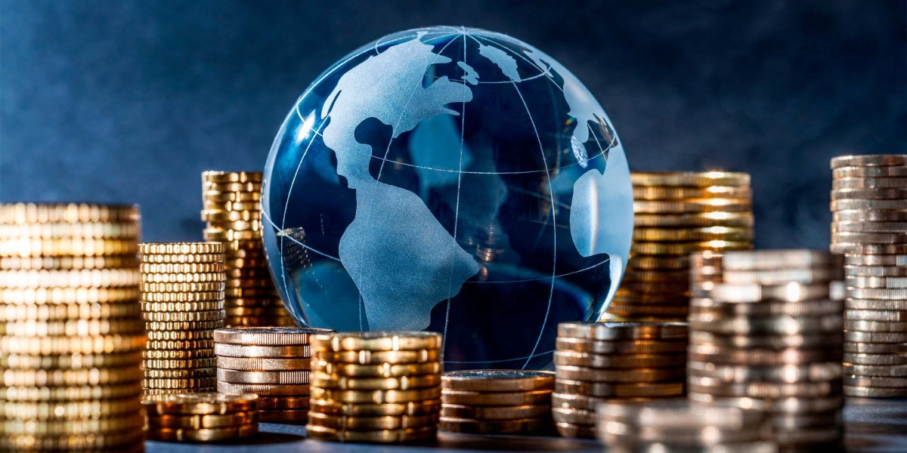

United Kingdom |
Economy |
|
|
The economy of the United Kingdom is one of the largest and most developed in the world. It is based mainly on services, such as banking, finance, education, healthcare, and tourism, with London being a major global financial center. The UK also has important manufacturing industries, including cars, airplanes, and technology, as well as trade with many countries around the world. Even though farming and industry are smaller parts today, the UK economy is diverse and plays a key role in the global market.
|
|
|  |
| what coin UK use? |
UK coins are made by the Royal Mint and come in pence (p) and pounds (£). Common coins include 1p, 2p, 5p, 10p, 20p, 50p, £1, and £2. Most feature a portrait of the reigning monarch (currently King Charles III) on one side. The other side shows symbols of British identity, such as parts of the Royal Shield, national emblems, or commemorative designs marking important events and people. |
|
| Copyright©2026 |